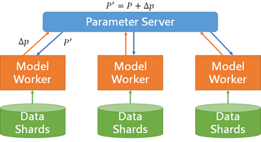

2015/12/29 Google深度學習實作 by Dr.邱中鎮(Chung-Cheng Chiu) @中研院
What’s deep learning
- A powerful class of machine learning
- modern reinforcement of artificial NN
- collection of simple, trainable mathematical functions
- loosely based on knowledge that we know about brain
- each neuron is connected to some neurons in a priori layer
- each neuron is y = g( wx + b ) and working together
Artificial Neural Network 簡介
A simple neuron
-
- x[0,1], x[0,2], x[0,3] are parameter to learn
- very efficient to compute
Add nonlinearity
-
- 使用rectified linear unit (ReLU)作為activation function
- nonlinearity allows us to add more layer
Learn parameter
-
- minimize difference between target and output value with respect to x
- learn x
x = argmin[x]Diff(target, output)
- the difference is loss function
Optimization
-
- use gradient descent to minize loss function
- calculate gradients of x
- chain rule
- 使用backpropagation
Trade-off between model and data
- 大量的data是關鍵
- simple model with huge data 成效優於 fancy model with little data
- QA：
- Q：當資料少時，用Bayesian Program Learning產生額外的學習案例，是否對learing有幫助？
- A：透過BPL產生的資料，比較適合用machine learning進行學習，不適合用Deep learning
Experiment turnaround time and research productivity
- Minutes, hours
- 1-4 day: tolerable
- interactivity replaced by running many experiments in parallel
- 1-4 weeks: progress stalls
- high value experiments only
- longer than 1 month: don't try it
Transition
- model parallelism
- data parallelism
Model parallelism
- reduce step training time
- many models have lots of inherent parallelism
- 對model要有insight才能切割的好以避免額外communication
- 類型
- Single core: Single Instruction Multiple Data
- Across cores:
- Thread parallelism，用現成設訂好的
- Almost free, unless across sockets, in which case inter-socket bandwidth matters
- Across devices: for GPUs, often limited by PCIe bandwidth
- Across machines: limited by network bandwidth / latency
Data parallelism

- use multiple model replicas to process different examples at the same time
- all collaboration to update model state in shared parameter
- speed up depends on kind of model, dense model or sparse model
- Asynchronous Data parallelism
- distributed SGD
- Pros: relatively fault tolerant
- Cons: gradient staleness, which means each gradient less effective
(由於每個model worker都在同步進行SGD，因此gradient品質變差)
- 適合用於sparse model
- Synchronous Data parallelism
- N replicas equivalent to N times larger batch size
- Pros: No gradient staleness
- Cons: less fault tolerant
- 適合用於dense model
目前應用deep learning技術之項目
1. Object recognition in images
-
- Google: Inception-v3
- Microsoft: Deep Residual Learning
2. Object category discovery in viedo
3. Speech recognition
-
- Trend: LSTM, end-to-end
- speech => acoustics => phonetics => language => text
- feature extraction might decrease quality
4. Annotating images with text
5. Pedestrian detection for self-driving cars
6. OCR: reading text from images
-
- ex: Google recognize street number and sign text from Google Street View pic
7. Machine translation
-
- sequence to sequence framework
- encode: 看source資料，然後變成dense knowledge
- decode: 把knowledge decode成text
- neural conversational model